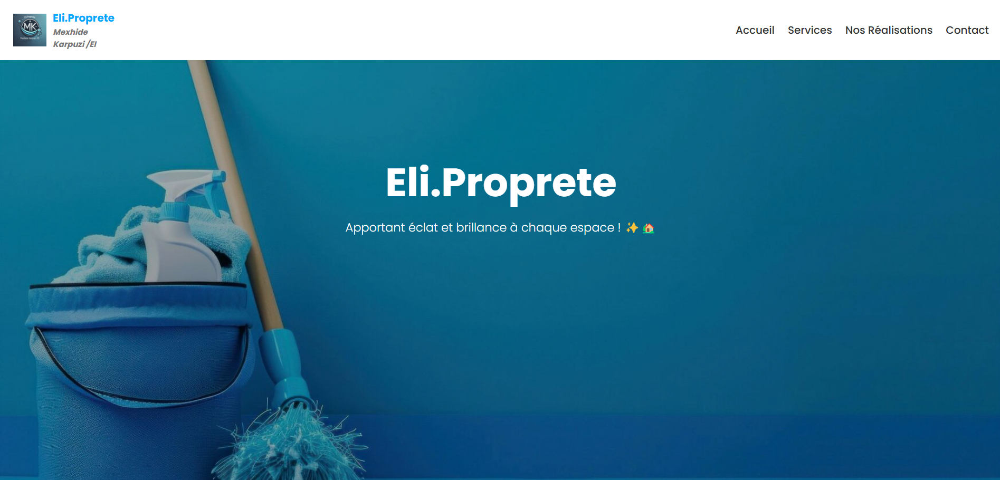

B2B Dashboard
● LIVE
Eli Proprete
Advanced operational management for a high-demand cleaning company. Features real-time booking pipelines and role-based auditing.

Enterprise CRM
● LIVE
V.Z Entreprenør
Internationalized corporate infrastructure for an Oslo-based construction entity. Optimized for speed and multi-language rendering.

Health Core
● LIVE
Manual Physio
Specialized clinic management dashboard for tracking patient treatments, billing, and therapist scheduling.